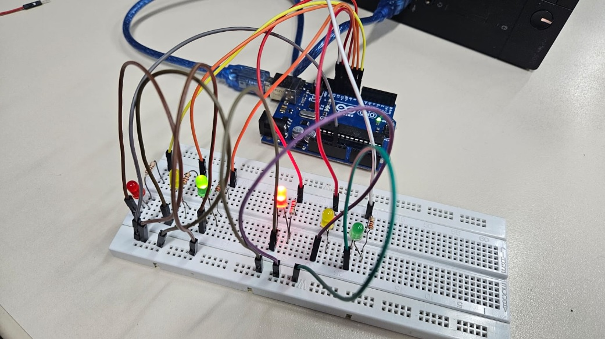

Semaforo Duplo - Prática
Logo abaixo está a foto da montagem do semaforo Duplo

Video do semaforo funcionando na pratica
Logo abaixo print do semfaro duplo no tinkercad
Abaixo ta o código C++ do circuito semaforo duplo
// C++ code
//
void setup()
{
pinMode(8, OUTPUT);
pinMode(13, OUTPUT);
pinMode(12, OUTPUT);
pinMode(10, OUTPUT);
pinMode(11, OUTPUT);
pinMode(9, OUTPUT);
}
void loop()
{
digitalWrite(8, HIGH);
digitalWrite(13, HIGH);
delay(7000); // Wait for 7000 millisecond(s)
digitalWrite(13, LOW);
digitalWrite(12, HIGH);
delay(2000); // Wait for 2000 millisecond(s)
digitalWrite(12, LOW);
digitalWrite(8, LOW);
digitalWrite(10, HIGH);
digitalWrite(11, HIGH);
delay(7000); // Wait for 7000 millisecond(s)
digitalWrite(10, LOW);
digitalWrite(9, HIGH);
delay(2000); // Wait for 2000 millisecond(s)
digitalWrite(9, LOW);
digitalWrite(11, LOW);
delay(1); // Wait for 1 millisecond(s)
}